2.6 Multi-Select, Clustering, and Moving Shapes
When you first start up Packet Tracer Mobile, you are greeted by the Cisco Networking Academy homepage.
You can either sign in with your NetSpace account or log in as a Guest. To log in with your NetSpace account, tap Log In located on the top right of the page.
For iPhone users, tap the drop down menu indicated by the red arrow to access Log In.
If logging in as a Guest, tap Guest Login and wait for the timer to expire before you can tap Guest Login again to use Packet Tracer Mobile. With a Guest Login, you are restricted from accessing/storing files with Dropbox and Box, as well as sharing your work with email, Facebook, and Twitter. In addition to accessing these extra features, there are some other advantages and perks with a NetSpace account.
First and foremost, by signing up for a NetSpace account, you will be part of the Cisco Networking Academy, a worldwide organization focused in preparing students with skills needed to build, design, and maintain computer networks. Students of the Academy are given access to a wide range of resources to advance their education and improve their career prospects in the networking field. As part of the Networking Academy, NetSpace serves as an online learning environment that combines applications for teaching, learning, and collaboration.
In Packet Tracer Mobile, while signed into NetSpace, you can easily access your Academy courseworks, labs, and assignments.
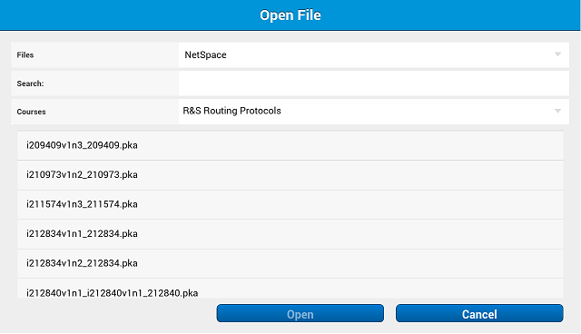
For more information regarding the Cisco Networking Academy, visit https://www.netacad.com/.
After logging into NetSpace or as a Guest, you will be presented with the following interface:
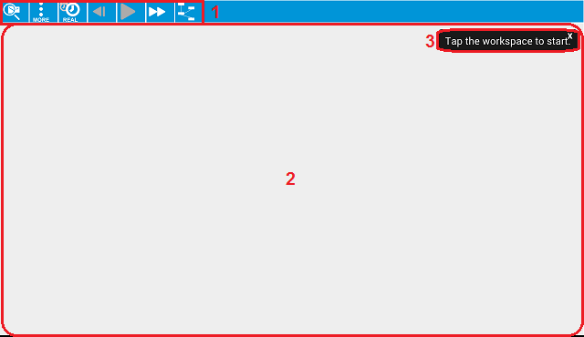
This initial interface contains three components:
| 1 | Action Bar | Tapping on the Packet Tracer Mobile Icon opens the File Menu which you can:
|
| 2 | Workspace | The main area where you will create your topology, watch simulations, and gather various types of network information and statistics. |
| 3 | Guidance | Dynamic help messages appear on different parts of the workspace. These messages will automatically disappear or users may close them right away with a single tap. |
Packet Tracer Mobile experience may be customized by editing application preferences. View the current settings by opening the Options window under the Overflow Menu on the Action Bar. The settings are separated into categories.
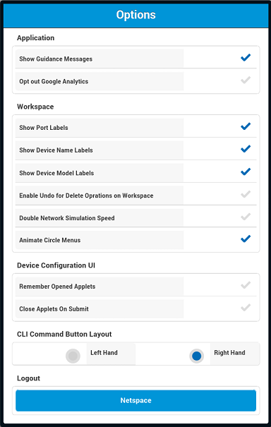
Under Application, users can turn on or off the helpful Guidance Messages that appear throughout Packet Tracer Mobile. We also have given users the option to Opt out Google Analytics. However, doing so will prevent us from gaining valuable feedback on your experience as we continue to improve Packet Tracer Mobile.
Since the Workspace is where users will be spending most of their time on Packet Tracer Mobile, there are numerous options they can adjust to fit their needs. Show Port Labels, Show Device Name Labels and Show Device Model Labels may be toggled to manage display of information on the workspace. Enable Undo for Delete Operations on Workspace allows the user to undo a delete action. When turned on, Packet Tracer Mobile will perform a quick save whenever the user deletes something, such as a device or cable. Then, by going to the Overflow Menu and selecting Undo, the deleted devices will be reloaded back to the workspace. This feature slightly lowers Packet Tracer Mobile performance. Toggling Network speed x2 on will speed up the network simulation, allowing topologies to converge and packets to be sent faster. Toggle the Animate Circle Menus to help speed up Packet Tracer Mobile performance. When this option is turned off, the contextual menus appear without animation.
For Device Configuration UI settings, Remember Opened Applets sets Packet Tracer Mobile to open the last used applet of the device each time you close the applet or return to the workspace. Applets can also be set to always close after changes have been submitted by selecting the Close Applets On Submit.
As shown in the screenshots below, the shortcut keys inside the CLI for routers and switches may be set to appear on whichever side it is most comfortable for the user. To do so, choose the setting under the CLI Command Button Layout section.
Command Buttons for Left-handed Users
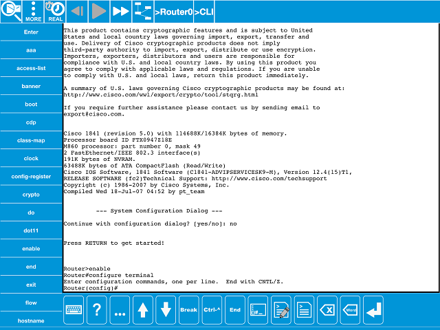
Command Buttons for Right-handed Users
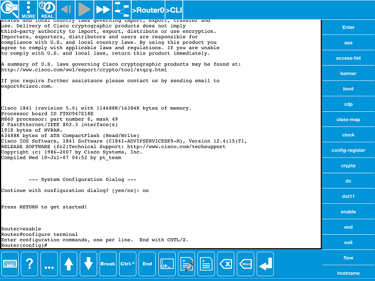
And finally, if logged in, users can Logout of their NetSpace, Facebook, Twitter, Dropbox, and/or Box accounts.
To start creating your network, tap anywhere on the workspace to bring up the Default Workspace Contextual Menu.
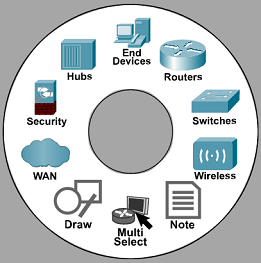
The first layer of the menu displays the different device categories. It also has the options of entering Multi-Select mode, creating annotations on the workspace using Note, and drawing shapes with Draw. These will be covered in the later sections of this help file.
Tap on one of the device types to bring up the next layer, displaying specific device models for that category.
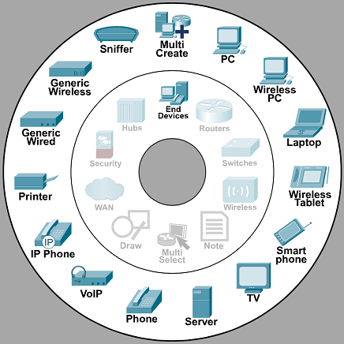
Selecting one of the specific device models will create that item. It will be placed on the location tapped to bring up the Default Workspace Contextual Menu.
Multi-Create is available to add multiple instances of a device. To set the number of devices you would like to create, use the - / + or type directly in the field to change the number.
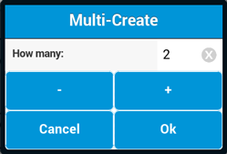
Select OK, choose a device model and they will be added to the workspace.
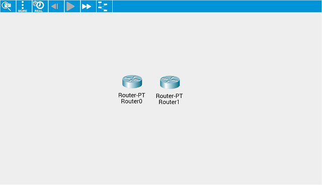
Tap on the device to bring up the Device Contextual Menu. The selections on this menu are specific to the type of device.
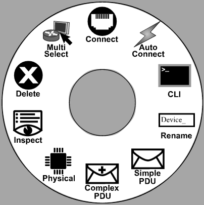
From this menu, a device can be renamed or deleted.
There are two ways of making connections between devices. The first is using Auto Connect from the Device Contextual Menu. After selecting this option, tap the device you want to connect with your first selection and Packet Tracer Mobile will automatically select the cable and available ports to make the link.
The other option is to select Connect to enter the Connection View. Once inside the view, tap on Choose Cable to show the Cable Selection Menu. After a cable is selected, tap on the desired ports from the upper row and lower row to create the connection.
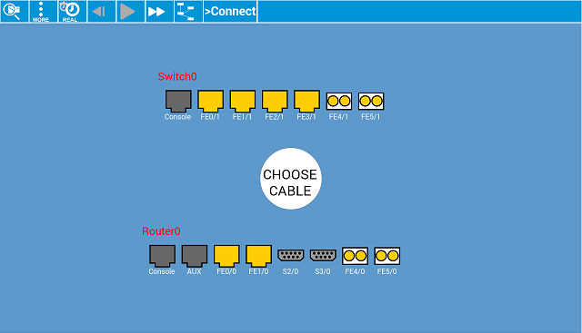
You can continue creating connections without exiting this view by tapping on the device name to bring up a list of devices that are available for connecting.
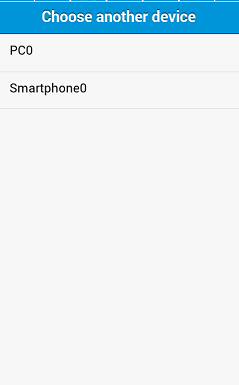
Similar to making connections, removing connections can also be done two ways. For the first method, while in connection view, simply tap on the port that you would like to disconnect. The second approach is to tap on the cable on the workspace and a prompt will appear asking to confirm the deletion of the link.
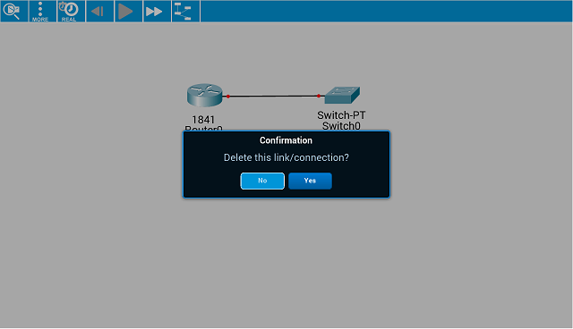
Physical
From the Device Contextual Menu, you can choose Physical to view the physical image of the device. Most Packet Tracer Mobile devices have modular bays or slots for which you can insert modules. These modules determines the type of ports that the device will have. In the Physical View, you can add modules by dragging them into empty slots or by tapping on a module and then an empty slot. To remove modules from the device, simply drag them out of their slot or single tap them.
As in real life, remember to turn the power off before you add or remove modules!
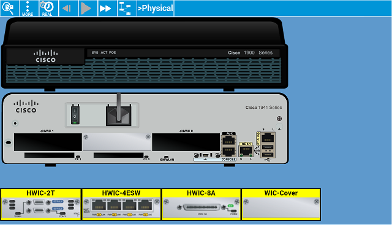
Desktop
Depending on the device, you can use the Desktop to make configurations using applets. The table below shows a list of available applets and a short description of their use.
End Devices
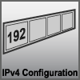 |
Sets the device to get IP settings using DHCP or by manually entering Static IP Address, Subnet Mask, Default Gateway and DNS Server. |
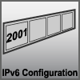 |
Sets the device to get IPv6 settings using DHCP or by manually entering Static IPv6 Address, Subnet Mask, Link Local Address, IPv6 Gateway and IPv6 DNS Server. |
| If the PC has a wireless NIC module installed, this applet is used to view and modify wireless network configuration, status, and statistics. | |
| Allows access to web pages that can be reached in the topology. | |
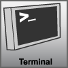 |
Provides access to the CLI of the connected router or switch via console connection. |
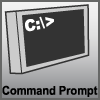 |
Brings up the Command Line utility of the device. |
| Creates IPv4 firewall rules to allow or deny certain protocol functions on the network. | |
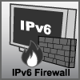 |
Creates IPv6 firewall rules to allow or deny certain protocol functions on the network. |
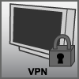 |
Establishes a VPN connection to a VPN server. |
| Sends and receives emails. | |
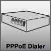 |
Establishes a point-to-point connection to a PPPoE server. |
| Use to create or edit .txt files to use within Packet Tracer Mobile. |
Server
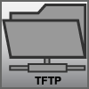 |
Contains a selection of IOS images that can be used to flash routers and switches. |
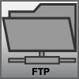 |
Adds and removes FTP accounts, modifies FTP account permissions, and removes files from the FTP service. |
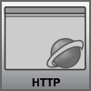 |
Edits included HTML pages and adds or removes HTML files from the server. |
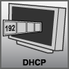 |
Sets up a DHCP server with different IP address pools. |
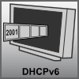 |
Sets up a DHCPv6 server with different IPv6 address pools. |
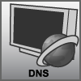 |
Sets up a DNS server to translate domain names with different types of resource records, which are basic data elements in the Domain Name System. |
| Sets up the server to use the SMTP and/or POP3 protocol(s). | |
| Sets up the server to be a RADIUS or TACACS server. | |
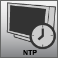 |
Sets up the server to be an NTP server so that the date and time on the configured routers and switches are synchronized. |
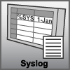 |
Logs messages from routers and switches in the network. For each entry, the Time, HostName, and the actual Message are logged in the server. |
Cloud
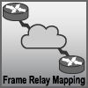 |
Establishes Frame Relay connections between sub-links on the ports of the cloud. |
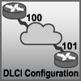 |
Toggle Port Status, choose an LMI (ANSI, Cisco, or Q933a), and assign DLCIs to the interface for serial ports on the cloud. |
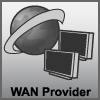 |
Sets DSL or Cable to establish connections between modem ports (for DSL) or coaxial ports (for Cable) on the cloud to the Ethernet ports on the cloud. |
Linksys Wireless Router
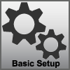 |
Provides access to Internet Setup, Network Setup and DHCP Server configuration. |
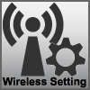 |
Modifies Network Mode, SSID, Radio Band and Standard Channel settings. |
| Sets wireless security mode, encryption settings, and passwords. | |
| Provides information about the wireless router's current state. | |
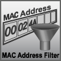 |
Prevent or allow devices access to the wireless network. |
| Sets router access password and provides access to backup and restore of configurations. | |
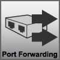 |
Shows, enables and changes port forwarding settings. |
Access Point
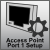 |
Provides access to wireless SSID, Authentication, and Encryption configuration for Port 1. |
CO Server
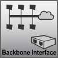 |
Sets IP settings using DHCP or by manually entering Static IP Address, Subnet Mask, Default Gateway and DNS Server for the Backbone interface. |
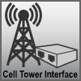 |
Provides information regarding IP and IPv6 configuration for the Cell Tower interface. |
| To enable or disable the Cell Tower Service. Also, provides information regarding to any connected Cell Tower and their connected devices. | |
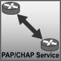 |
To configure PAP or CHAP service for the interfaces of the CO Server. |
Sniffer
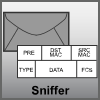 |
Provides a table of the packets captured by the sniffer. Also, allows the user to turn the service on/off, change the capture port, adjust the buffer size, and filter packets. |
CLI
Routers and switches are complex devices that can be configured using the CLI. As mentioned in the previous sections, Command Buttons are available on either the left or right side of the CLI (depending on the user's preference) and contains shortcut keys for CLI commands. The button list is updated with available commands for each level of configuration entered.
In addition to the Command Buttons, shortcut keys are also available on the bottom of the CLI screen. Their functions are explained in the table below.
| Shows or hides the keyboard. | |
| Shows available commands in the current mode. Similar to "?" in the CLI. | |
| Shows more of the show outputs. Similar to using the space bar in the CLI. | |
| Displays previously entered commands. | |
| Displays previously entered commands. | |
| Interrupts the loading of the Cisco IOS to enter ROMmon mode. | |
| The escape character used for interrupting or aborting a process started by previously executed command. Examples of processes from which you can escape include Domain-Name lookup, ping, trace, Telnet sessions, and service-module sessions on the 819 router. | |
| Exits the configuration mode and goes back to the privileged EXEC mode. | |
| Brings up a list of previously entered commands and their respective outputs. | |
| Used to create scripts that will be entered in the CLI. | |
| Brings up a list of all the scripts available for use. | |
| Deletes one character at a time. | |
| Deletes one word at a time. | |
| Shortcut key for Enter. |
To move around Packet Tracer Mobile, you can touch and drag in all directions and the workspace will move accordingly. For bigger topologies, you can use the pinch action to zoom in and out of the workspace.
As mentioned in the Interface Overview section, the Action Bar is used as a navigation guide for your topology. Other than specifying which device and applet is currently in view, it can also be used to switch between devices and applets.
To switch between devices, single tap on the device name displayed on the Action Bar and a drop down menu of all devices on the workspace will appear. While in a cluster, only the devices in that cluster will be shown.
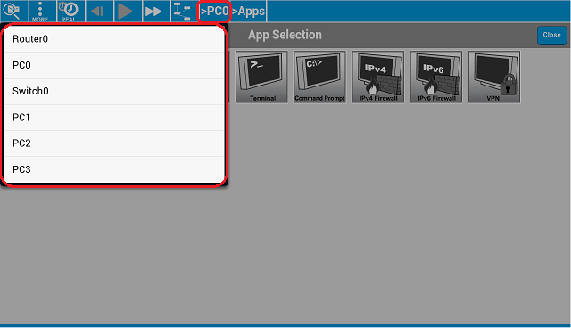
Switching into a Router or Switch, the default view will be the CLI. For most other devices, the default view will be the Desktop.
In an applet view, you can go back to the Desktop by tapping on >Apps. To close any opened panels and to return to the workspace, tap the Workspace button.
To draw shapes on the workspace, select Draw on the Default Workspace Contextual Menu. Select the shape you want to draw, or go to Options to customize the colors of the shape's Outline and/or Fill. To draw shapes, drag your finger across the workspace.
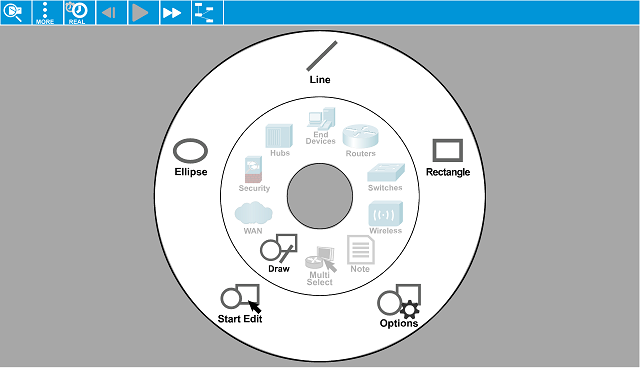
Note: While in Draw Mode, you will only be able to draw shapes. To exit this mode, simply tap an area on the workspace and select Exit Mode.
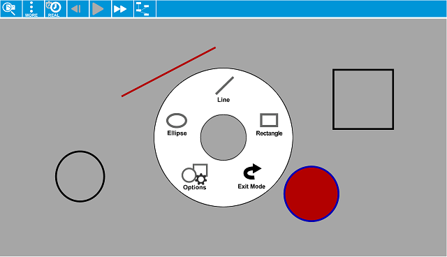
To move shapes, in the Draw contextual menu, tap Start Edit to enable Shape Mode. While in this mode, you can move your shapes by dragging and dropping, just as if you are moving devices.
While in this mode, you will only be able to move shapes. To move devices again, tap the workspace to bring up a menu, then tap Exit Mode.
Multi-Select
Multi-Select mode can be entered from the Default Workspace Contextual Menu or the Device Contextual Menu. This mode is useful when you want to perform actions on multiple devices at one time.
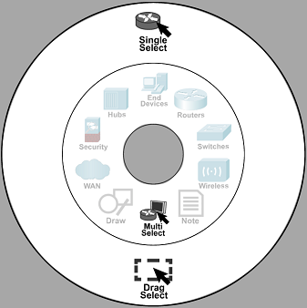
There are two ways to select multiple items on the workspace. First is by using Single Select. Once this option is chosen, you can tap on items on the workspace and they will be selected. Items that are magnified indicate that they are part of the selection.
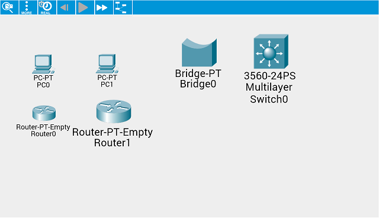
Another way is to use the Drag Select which will allow you to drag across the workspace. Items that are within the red rectangle will be selected.
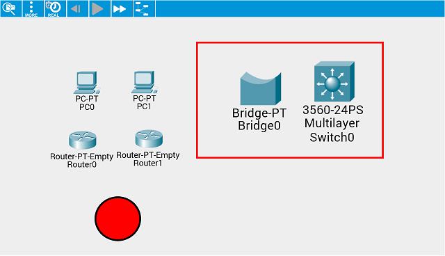
Tap an item to unselect it. To undo the whole selection, tap on an empty spot on the workspace to bring up the Multi-Select Contextual Menu. Choose Unselect to cancel all selections that was previously made.
You also have the option of going back and forth between Single Select and Drag Select in this menu depending on your needs.
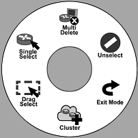
Once you have multiple items selected, you can now perform actions on them such as Multi-Delete which deletes your selections from the workspace without any confirmation.
Exit Mode cancels all selections and exits Multi-Select Mode.
Clustering
Multiple selected items can also be put into a Cluster. Clusters help better organize and separate devices in your topology.
To create a cluster, first select multiple devices. Next, tap the workspace to bring up the Multi-Select Contextual menu, then tap Cluster.
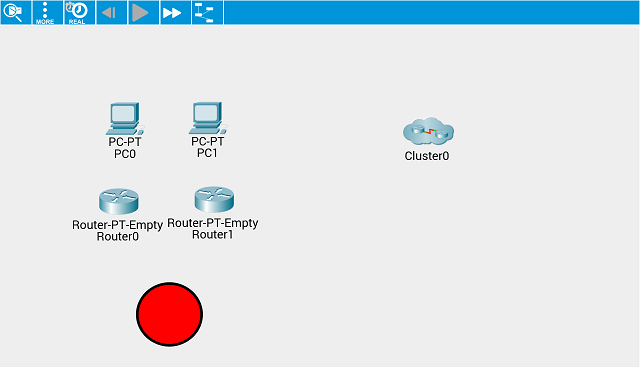
In addition, you can add devices to a created cluster by dragging and dropping devices into it. If in Shape Mode, you can also drag shapes into clusters.
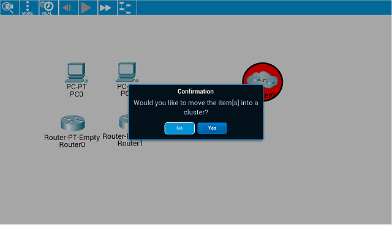
To enter a cluster and view its contents, tap on the icon on the workspace and select Enter from the Device Contextual Menu. You can also Rename, Connect, Add Simple PDU, Uncluster and Delete the entire cluster from this menu.
To exit out of a cluster, tap on the icon Parent Cluster to go back to the previous workspace view.
Double tapping is available for use in Packet Tracer Mobile as shortcuts to certain features.
To toggle between modes, tap Realtime or Simulation buttons on the Action Bar.
In Realtime Mode, the network is always running whether you are working on it or not.
Converge a network quickly by tapping the Fast Forward Time button to advance Realtime by 30 seconds. A use case would be where you have a large network of switches connected in loops and STP convergence may take a considerable amount of time. By tapping on the Fast Forward Time button a few times, STP converges within seconds rather than minutes.
As the network is running, the Inspect tool can be used to view tables of the device as they are populated and updated in Realtime.
In Simulation Mode, time is "paused" until the play controls are used to see the network run step by step. In this mode, you will see graphical representations of packets travelling from one device to another.
You can graphically create PDUs to send between devices using the Simple PDU or Complex PDU from the Device Contextual Menu. The play controls on the Action Bar starts or stops the simulation. Tapping on Play runs the simulation continuously until there are no more packets left to send. Stop pauses the simulation. Forward manually runs the simulation one step in time and Back allows you to revisit a previous event that occurred.
The Event List window records or captures what happens as PDUs propagate through the network. To view the Event List, first open the Overflow Menu on the Action Bar, then select PDU.
Hide packets from view by tapping on the Edit Filters button and unchecking the appropriate filter from the menu that appears. Make sure to tap on Apply Filters to retain the changes. Tap on the Show All/None to show all types of packets.
You can tap on a packet (on the topology or the corresponding event in the Event List) to bring up its information window and view its details. The details window contains the OSI Model, Inbound PDU Details, and Outbound PDU Details.
With the Scenario panel, you can set up and simulate complex networking situations. A scenario is a set of user-created PDUs placed on the network to be sent at specific times. To use the panel, open the Overflow Menu and tap Scenario.
You can create and delete scenarios with the New and Delete buttons, and you can switch between scenarios by choosing from the scenario drop-down menu. Multiple scenarios can be created for one logical topology, corresponding to different test conditions you may want to model. The distinction between Scenario and the Event List is that the Scenario panel only shows user-created PDUs, whereas the Event List displays ALL packets occurring anywhere on the network.
To place a user-created PDU on the network, tap on the source device to open its Device Contextual Menu, select either Simple PDU or Complex PDU, and then tap on the destination device.
The Scenario panel will list the user-created PDUs. It has the following fields:
To close the Scenario panel, tap on the Workspace button.
Complex PDUs
In addition to simple, quick pings, you can also send customized PDUs. Selecting Complex PDU on the Device Contextual Menu will bring the bring up the Create Complex PDU dialogue.
You can choose which port that the PDU will be sent out (or leave it at the default). You can also change the type of the PDU by selecting from the list of applications. Depending on the application and device, the PDU may have the following settings: Destination IP Address, Source IP Address, TTL (Time-To-Live), TOS (Type of Service), Source Port, Destination Port, Sequence Number, and Size.
You can also set the timing parameters of the PDU. The PDU can be a One Shot event; it is to be sent at a time you specify in seconds. Alternatively, the PDU can be a Periodic event, which will be sent periodically at intervals you specify in seconds.
| Question | Answer | |
| 1 | How can I sign up on NetSpace? | You must be a registered and enrolled student, instructor or Cisco staff. |
| 2 | Can I still use Packet Tracer Mobile without a NetSpace account? | Yes. At the NetSpace login page, you can log in as a Guest. Certain features will be restricted with Guest Login. |
| 3 | Why do I have to be connected to the Internet to use Packet Tracer Mobile? | Using a Guest account does not require an Internet connection. However, to log into NetSpace and access its features, an Internet connection is required. |
| 4 | How do I hide the keyboard when using the CLI? | Tap the button on the bottom left corner of the keyboard to hide it. |
| 5 | Why is the Fast Forward button not working? | The button works, but there is no timer in Packet Tracer Mobile to indicate that Realtime has advanced 30 seconds. |
| 6 | Do the Realtime and Simulation buttons indicate action or current mode? | The Realtime and Simulation buttons indicate the current mode. If the button says Realtime, it means you are currently in Realtime Mode, and tapping it will switch to Simulation Mode. |
| 7 | Why don't I see the screenshot I just shared on Facebook? | The screenshot is posted on the Cisco Networking Academy’s Facebook page, not on your own Facebook Timeline. |
| 8 | Why is the ASA/switch/router not booting up? | Check if you are in Simulation Mode. If you are, the device is waiting for time to elapse in order to boot up. Press Play or Forward to let time elapse or switch to Realtime Mode. |
| 9 | Why does the Simple and Complex PDU appear not to be doing anything? | Simple and Complex PDUs can be used to populate ARP tables and test connectivity. You can view the status of the PDU in the Scenario panel, accessed via the Overflow Menu. You can alternatively use the ping command on devices to test connectivity. |
| 10 | Why doesn’t the activity completion percentage update when I correctly configure an assessment item? | You must manually update the activity completion percentage by tapping on the Completion: button or the Check Results button. Also, make sure that you tapped Submit after doing a configuration in an applet. |
| 11 | Why do I get an error when I try to load a file from NetSpace? | There may have been an issue when you logged in with NetSpace. When you first log on to NetSpace, be sure to authorize Packet Tracer Mobile to access your NetSpace account by tapping 'Log in' on the Canvas screen. To reauthorize, go to Options to log out and log in again. |
| 12 | Why does tapping the Forward button in Simulation Mode show a the pop up message "Event List is Full" when the Event List appears either empty or has only a few events in it? | The simulator accumulates all network traffic events into a buffer. When the user applies PDU filters, only a subset of all accumulated events will be shown. Thus, even when the event buffer is full the user might see only a few events. In a case where no events are selected to be shown in the filters, the buffer may reach capacity without displaying any events. |
| 13 | Is there a way to preserve the data in device configuration forms when switching between devices without explicitly closing those forms? | In Options, enable "Remember Open Applets". However, if the configuration form/applet is explicitly closed with the "Close" button, all form data would be lost regardless of this options setting. |
| 14 | Is there a way to find out port names for cable connections between network devices? | In Options, enable "Always Show Port Labels" to view port labels on cable connections. |
| 15 | Is there a configuration where the buttons in switches and routers configuration are placed on the left side of the command line panel? | In Options, the property named "Command Button Layout" allows one to choose between left or right placement for the Command buttons. |
| 16 | How do I manage Packet Tracer Mobile files on my iOS device? | You can manage your files through iTunes. On iTunes, depending on your device, go to iPhone or iPad and click on 'Apps' on the side menu. On the Apps screen, scroll down to find Packet Tracker on the Apps list. From there, you can access your saved files, as well as adding files to your iOS device. |
| 17 | Why does tapping the Forward button in Simulation Mode show two batches of frames? | When Simulation Mode starts, it will not load the first batch of frames, tapping Forward button the first time will load the first and second batch of frames all together. |
| 18 | How come some my files aren't listed on my NetSpace account? | We are aware of this issue and are working with NetSpace to fix it. |
| 19 | Sometimes the CLI keyboard shrinks horizontally. How can I restore to its normal size? | Close the keyboard with the Hide Keyboard button, and then bring the keyboard back again. |
| 20 | How can I close the Event List? | To close the Event List, you can tap on an empty area on the workspace or tap the Workspace button. |
Chris Allen Brad Anderson Esther Baruthi (School of Computer Technology, George Brown College, Toronto) Alex Bilyk Tony Deng Jade Deyhim Dennis Frezzo Abbas Hakimzadeh Brian Ho Tuan Hoang Linda Hu Kimberly Kupanoff Thanh Le Alex Leung Chiu Luk Benjamin Millek Thi Nguyen Jorge Olenewa (School of Computer Technology, George Brown College, Toronto) Bjorn Palmer Lesley Tse Pamela Vinco Pei Zhi Yang (School of Computer Technology, George Brown College, Toronto)
Cisco and the Cisco logo are trademarks or registered trademarks of Cisco and/or its affiliates in the U.S. and other countries. To view a list of Cisco trademarks, go to this URL: www.cisco.com/go/trademarks. Third-party trademarks mentioned are the property of their respective owners. The use of the word partner does not imply a partnership relationship between Cisco and any other company. (1110R)
©2015 Cisco Systems, Inc. All rights reserved.